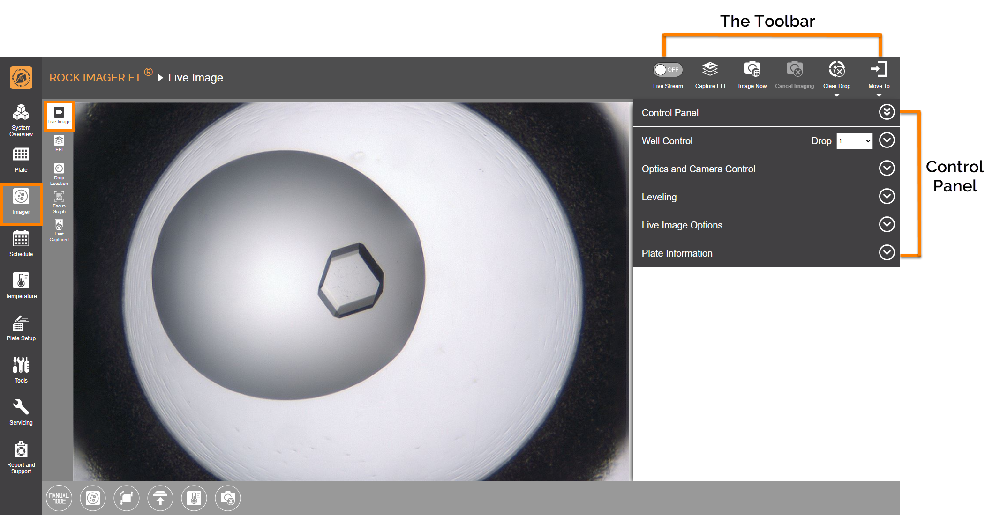
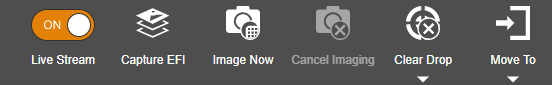

Live Image Sub-menu¶
The Live Image sub-menu is open by default when you click the Imager menu. You will spend most of your time here if you are manually inspecting a plate. But, you can also use this sub-menu to view what is happening during an automatic operation when a plate is being imaged.
In the screenshot below, the Live Image sub-menu is divided into two sections: The Toolbar and Control Panel.
{kind=link}
Live Image Sub-menu
The Toolbar¶
The Toolbar consists of tools to assist you during live image viewing, most of which are only active in Manual Mode.
{kind=link}
The Toolbar
Show me what the toolbar buttons
Buttons |
Imaging Methods |
Action |
|---|---|---|
Live Stream |
All |
Views the content of a plate in real time, which is useful when conducting manual inspections. |
Capture EFI |
Visible |
Captures Extended Focus Image (EFI) of a specific drop using the current camera and optics settings. This only applies to Manual Mode only. |
Image Now |
All |
Creates a custom imaging schedule. |
Cancel Imaging |
All |
Cancels all automated imaging for the current plate. |
{kind=link}
{kind=link}
{kind=link}
{kind=link}
Control Panel¶
The Control Panel area consists of manual imaging controls, such as the Well Control, Optics and Camera Control, and an image viewing tool to assist you while manually inspecting a plate or setting up a new plate definition.
Show me what Control Panel consists of
Item |
Description |
|---|---|
Well Control |
Well Control is enabled during manual imaging sessions. It contains buttons to help you navigate around your plate. Learn more about the Well Control Panel. |
Optics and Camera Control |
Optics and Camera Control is enabled during manual imaging sessions. This is where you configure the microscope’s optics and adjust how your images appear on the screen. Read more about the Optics and Camera Control Panel |
Leveling |
Use this image tuning feature in ROCK IMAGER FT to adjust the contrast and brightness of your drop images to better bring out the details and hidden crystals. Read how to use the Leveling Histogram |
Live Image Options |
Provides three toggle buttons as listed below.
|
Plate Information |
Shows the information of the plate currently under the imager. |
{kind=link}